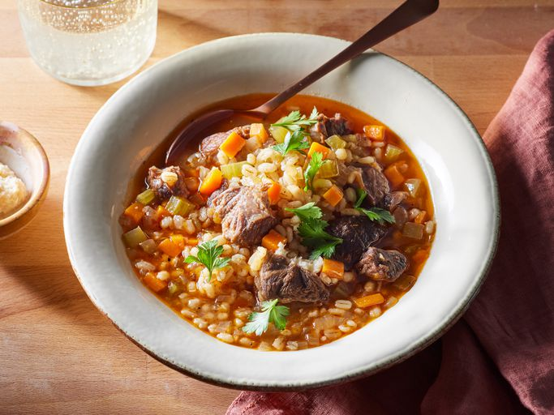

Home
Chef John's Beef and Barley Stew

Ingredients
This beautiful bowl of old-fashioned beef barley soup would be perfect for your next superstorm. When it comes to stick-to-your-ribs stews, it doesn't get any better than shank. There's so much gelatin-producing connective tissue that it makes an incredibly satisfying sauce for your meat and grain.
Recipe
- 2 thick slices beef shank
- kosher salt and ground black pepper to taste
- 1 tablespoon vegetable oil
- 1 large onion, diced
- 4 cloves garlic, minced
- 2 tablespoons tomato paste
- 4 cups chicken broth, or more as needed
- ⅔ cup diced celery
- ⅔ cup diced carrots
- ¼ teaspoon dried rosemary
- 1 bay leaf
- ½ cup pearl barley
- 1 tablespoon chopped fresh parsley, or to taste
- 1 tablespoon freshly grated raw horseradish, or to taste
Cooking Directions
- Gather all ingredients.
- Season beef all over with kosher salt and black pepper.
- Heat oil in a large pot over high heat. Cook beef in hot oil until browned on all sides, about 10 minutes. Transfer beef to a plate; set aside.
- Reduce heat to medium and stir onion into the same pot with a pinch of salt. Cook and stir until onion is soft and translucent, 4 to 5 minutes. Add garlic; cook and stir until fragrant, about 1 minute.
- Add tomato paste; cook and stir until tomato paste is brick red, 2 to 3 minutes.
- Pour in broth.
- Add celery, carrots, rosemary, and bay leaf.
- Return beef with any accumulated juices to the pot; push beef down to cover with cooking liquid.
- Bring to a simmer, then reduce heat to low. Cover the pot and cook until beef is fork tender, 2 to 3 hours. Remove beef to a large bowl.
- Pour barley into cooking liquid in the pot; bring to a simmer and cook until barley is tender, about 45 minutes.
- Return beef to the pot. Cover the pot and cook until heated through, about 10 minutes. Season with salt.